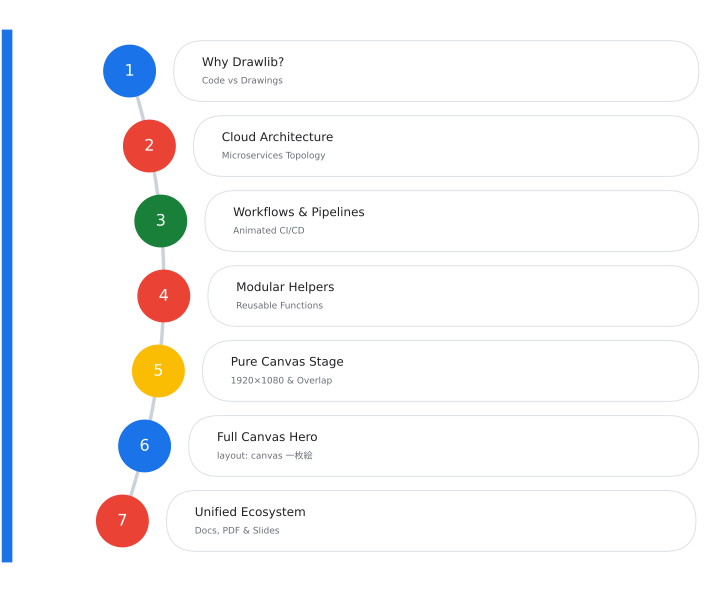
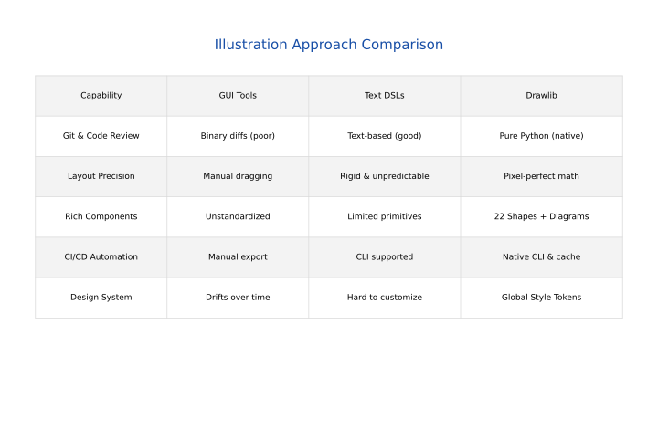
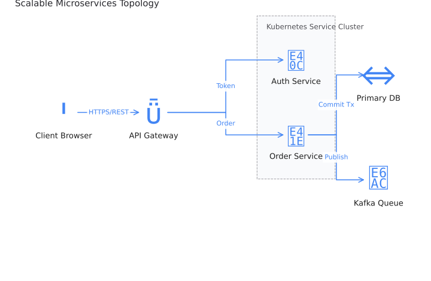
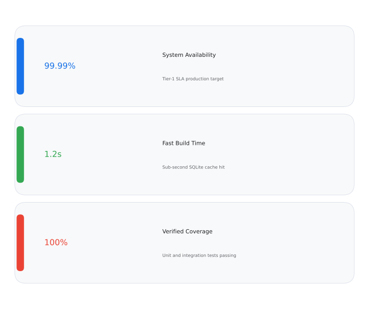

Drawlib
Illustration as Code for Modern Engineers
Declarative Python Diagramming & Modern Presentation Architecture
Yuichi Ito | Drawlib Author
October 2026
Topics Covered
A unified, declarative approach to engineering illustration:
- Why Drawlib?: The transition from fragile manual drawings to version-controlled Python code.
- Cloud Architecture: Composing microservice topologies with vector icons and orthogonal routing.
- Workflows & Pipelines: CI/CD integration, SQLite hash caching, and animated WebP diagrams.
- Modular SmartArts: Extensible layout components and custom presentation cards.
- Unified Ecosystem: Documentation sites, vector PDF books, and interactive slide decks.

From Fragile Drawings to Code
Traditional technical diagramming approaches face severe friction:
- GUI Tools (Visio, Draw.io) Binary files break Git diffs and code reviews. Diagrams quickly fall out of sync with code.
- Text DSLs (Mermaid, PlantUML) Unpredictable layouts, line crossing disasters, and difficult styling overrides.
- Matplotlib & Graphviz Heavy low-level boilerplate and unintuitive coordinate systems.
The Drawlib Solution
Pure Python declarative syntax, unified Google semantic palettes, and pixel-perfect coordinate math.

Scalable Topologies in Code
Drawlib provides high-level domain modules for cloud architecture with vector and official cloud icons:
- Client Ingress: Web SPA, Mobile App, Edge Workers terminating TLS
- Kubernetes Cluster: Isolated container pods with auto-scaling
- Data Persistence: Sharded primary database + Kafka event streaming
- Clean Syntax: Connect nodes with labels and automatic orthogonal routing

Automated CI/CD & Caching
Technical diagrams shouldn't slow down your deployment cycles:
- Git-Triggered Pipeline: Build runs automatically on pull requests
- Change Detection: Analyzes document diffs and Python dependencies
- SQLite Hash Caching:
- Unchanged blocks are restored in < 1ms
- Only modified diagram code triggers full Python execution
- Dynamic Animations: Render looping animated WebP diagrams natively using
Animation

Extensible Presentation Components
Drawlib bridges the gap between pure diagrams and structured presentation components:
- Built-in SmartArts:
curved_agenda: Visual agenda with curved arc and numbered topic pillstimeline: Linear chronological milestones and event sequenceschevron_process: Multi-stage execution flows
- Custom Project Components:
- Place Python classes into
_slide_templates/*.py - Subclass
SmartArtComponentand implementrender(box, content, output_file) - Call directly from Markdown with
smartart:<name> slot:<slot> file:<out.svg>
- Place Python classes into

One Illustration Core, Multiple Targets
Drawlib unifies engineering documentation and technical visualizations as version-controlled code:
| Target | Command | Output | Primary Use Case |
|---|---|---|---|
| Standalone Images | drawlib build image |
PNG, WebP, PDF | README graphics, blog posts, whitepapers |
| Documentation Site | drawlib build html |
Static Web Site | Technical specs, API references, architecture docs |
| Document Book | drawlib build pdf |
Merged Vector PDF | Formal RFCs, architecture books, print designs |
| Presentation Deck | drawlib build slide |
HTML Slide Deck | Conference talks, design reviews, team pitches |
Get Started Today
# Initialize a new presentation project with Google styling
uv run drawlib init slide -s google
# Build presentation slides
uv run drawlib build slide slide_src/ -o slide/
# Start interactive preview server
uv run drawlib serve slide/